Portfolio
I'm a software developer in the Seattle area. I build apps, fix platform bugs in open-source engines, and make tools I want to use. Currently looking for work in San Francisco or Seattle.
Independent iOS Apps↑
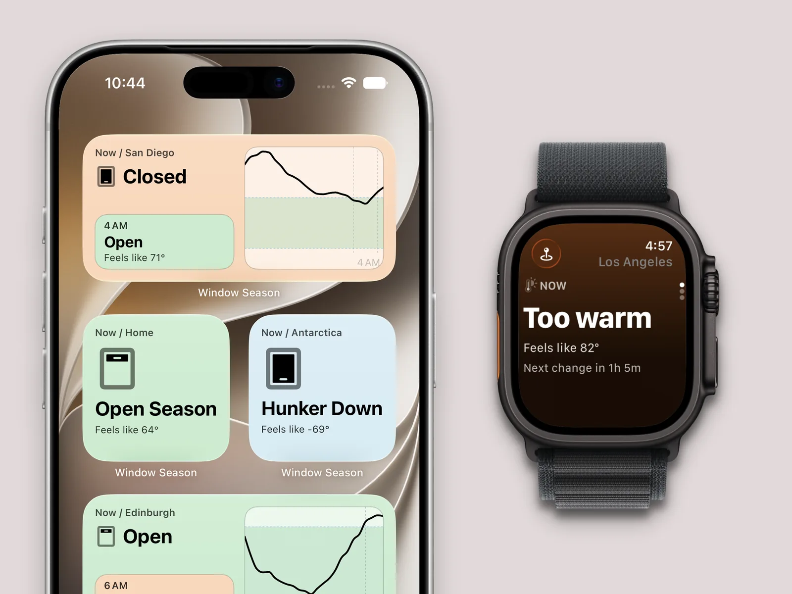
Window Season
NewFor climates that usually lack air conditioning, an app that shows guidance of when to get the best passive cooling. Factors in feels-like temperature, rain, and air quality.
Includes widgets for iOS and complications for watchOS.
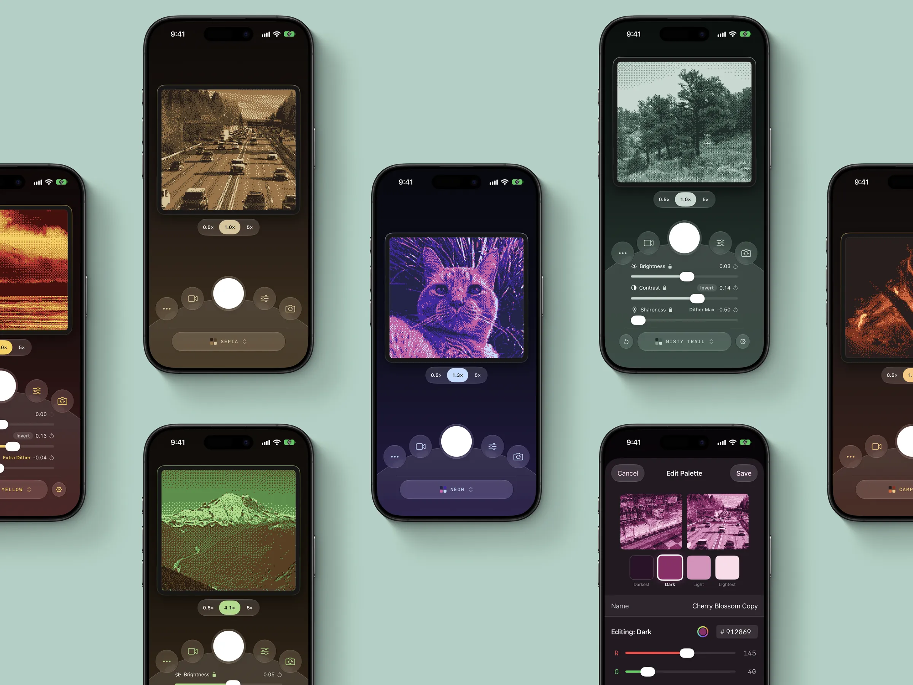
Pixellate Camera
Camera app that recreates the Game Boy Camera aesthetic from 1998, with full metadata and GPS support. Supports importing photos and custom color selections.
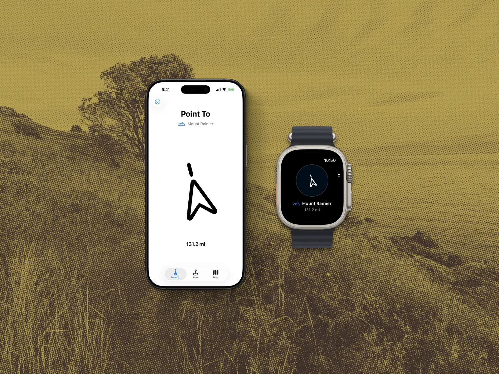
Point To: Custom Compass
A compass that points wherever you want. Syncs custom locations between iPhone and Apple Watch for standalone use. Started as a personal tool, ended up adopted by the Northeast Rail Feed Association for aligning radio antennas.
Open Source↑
Godot Engine
Godot Engine ⧉ is a free and open-source game engine used to create 2D and 3D games across all major platforms. It has received donations from Microsoft, Meta Reality Labs, Epic Games, Mozilla, and JetBrains. Parts of its code have been used by Tesla, Sega, and Electronic Arts.
8-Year-Old Daylight Saving Bug
Fixed OS.get_time_zone_info() returning incorrect UTC offset on Windows during DST. The implementation didn't account for DaylightBias—e.g., Mountain Daylight Time returned -420 minutes (UTC-7) instead of -360 (UTC-6). Bug existed since the initial Win32 implementation in 2014. Required understanding the Windows timezone API's distinction between standard and daylight bias values, fixed by applying the correct values.
Before my change, "Is it currently daylight saving time?" was hard coded to "No" on Windows.
iOS/Android App Lifecycle Notifications
Implemented NOTIFICATION_APPLICATION_PAUSED and NOTIFICATION_APPLICATION_RESUMED on iOS by wiring Godot's MainLoop to applicationDidEnterBackground / applicationWillEnterForeground UIKit delegates. Also exposed NOTIFICATION_APPLICATION_FOCUS_IN/OUT on both platforms for consistency. Enables reliable autosave within iOS's 5-second background execution window.
iOS Gesture Bar Settings
Added project settings for iOS status bar visibility (prefersStatusBarHidden), home indicator hiding, and edge gesture deferral (preferredScreenEdgesDeferringSystemGestures). The "double-swipe" protection used by commercial games. Previously required engine recompilation to change. Implemented by exposing UIViewController preference overrides through Godot's iOS display layer.
iOS "ProMotion" (120Hz) Display Support
Enabled ProMotion refresh rates above 60Hz on iOS by removing the hardcoded 60fps CADisplayLink cap in godot_view.mm, and setting CADisableMinimumFrameDurationOnPhone in the export plist. Apple requires both the plist key and explicit frame duration configuration. Affects iPad Pro (2018+), iPhone 13 Pro (and newer), iPhone 17 (and newer).
Bug Fixes
- Fixed
DisplayServer.screen_get_refresh_rate()returning 120Hz on ProMotion devices even when Low Power Mode throttles to 60Hz. (#85026) - Fixed 2-year-old bug where MovieWriter recorded incorrect resolution/aspect ratio when using Window Size Override with Viewport stretch mode. Output was being captured from the wrong render target dimensions. (#104334)
Godot 3.x Legacy Support
Backported iOS interface controls, ProMotion support, and mobile lifecycle notifications from 4.x to 3.x, enabling legacy projects to use modern features without migrating. Required adapting implementations to 3.x's different display server architecture.
Projects↑
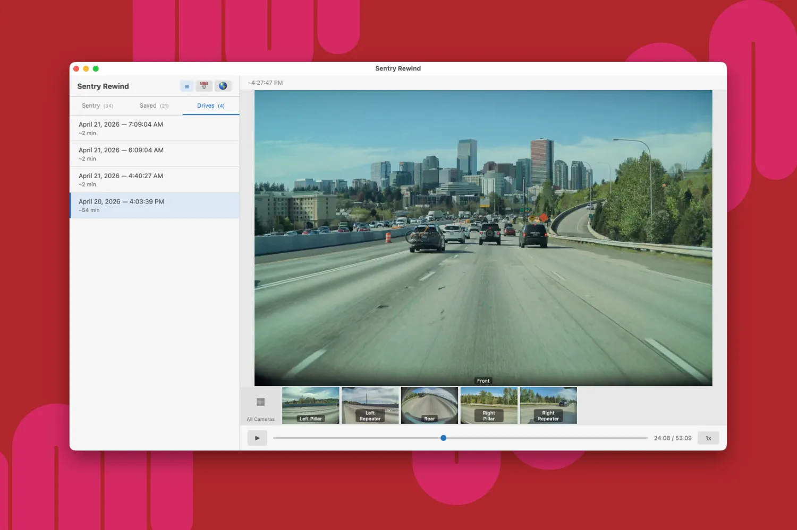
Sentry Rewind
A desktop app for viewing Tesla dashcam footage, with synchronized 6-camera playback, a calendar view, and a map view. Works with any Tesla-formatted USB drive.
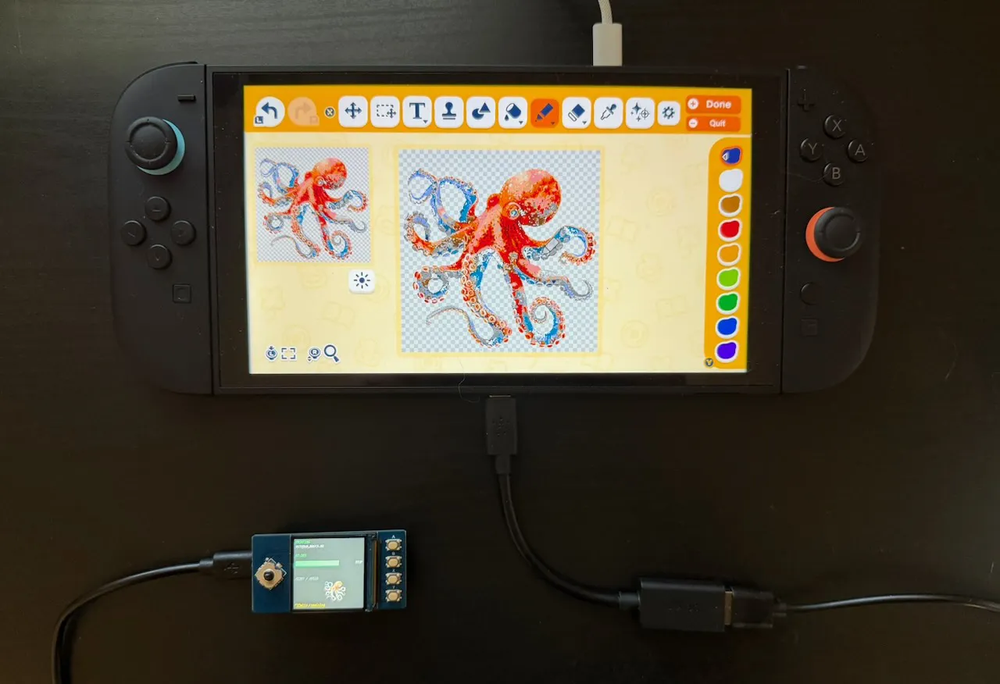
Printing The Dream
A tool for importing images into Tomodachi Life: Living the Dream. A Raspberry Pi Pico emulates a wired controller to draw images in the in-game custom item creator.
Reverse engineered how to send fastest inputs without game's cursor losing tracking. Works on Switch 1 and Switch 2. Zero console modification required.
TRMNL Plugins
Widgets/"recipes" I've built for the TRMNL ⧉ ambient e-ink displays.
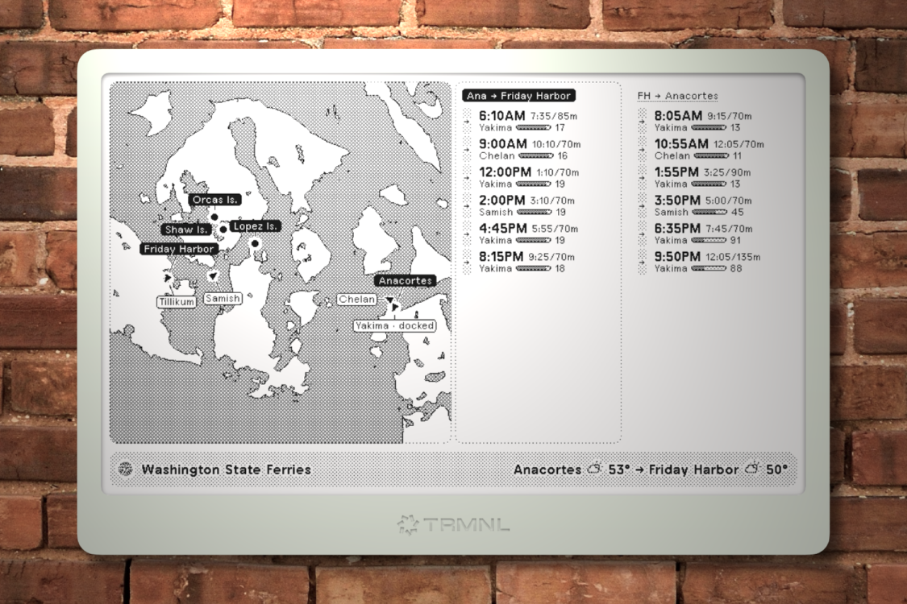
Washington State Ferries
Pulls real time data from the WSDOT Rest API including daily schedule, ship locations, cancellations, and service alerts. Supports every active ferry route, customizable on install.
I designed custom tooling for creating map images, validation of UX for various API states, and fitting into TRMNL's file size and bandwidth limitations.
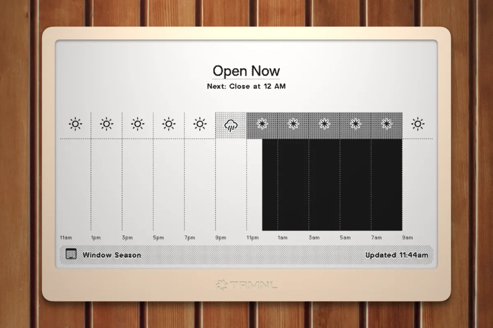
Window Season
For climates that usually lack air conditioning, a schedule of when to open your windows for cooling. Uses Open-Meteo's feels-like (apparent) temperature so humidity and wind are factored in. Also handles rain and AQI.
Experiments↑
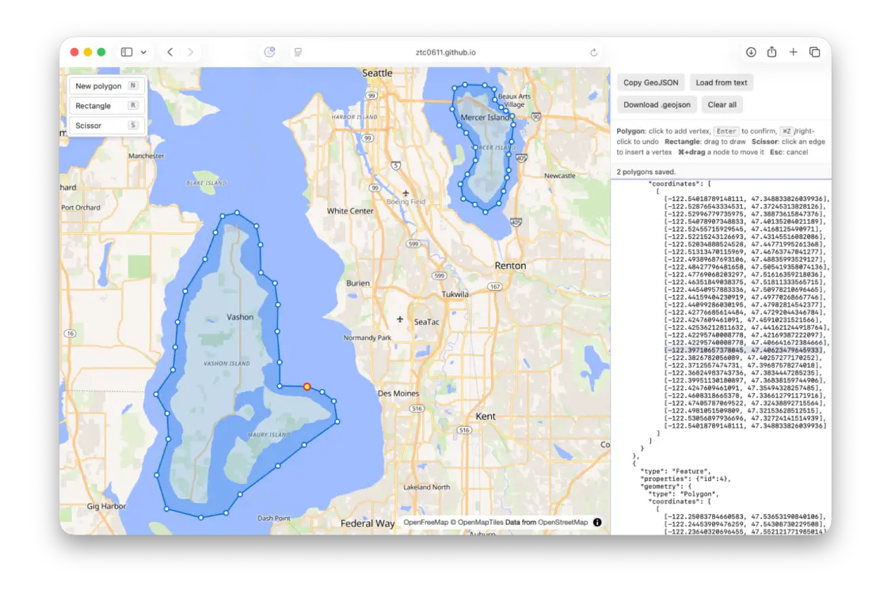
GeoJSON Polygon Drawer
A small browser tool I built when working on TRMNL WSF. Allows drawing polygons on a map and exporting them as GeoJSON. Supports polygon, rectangle, and scissor tools, with keyboard shortcuts and direct copy/download.
Works best with a mouse, supports macOS-style panning.
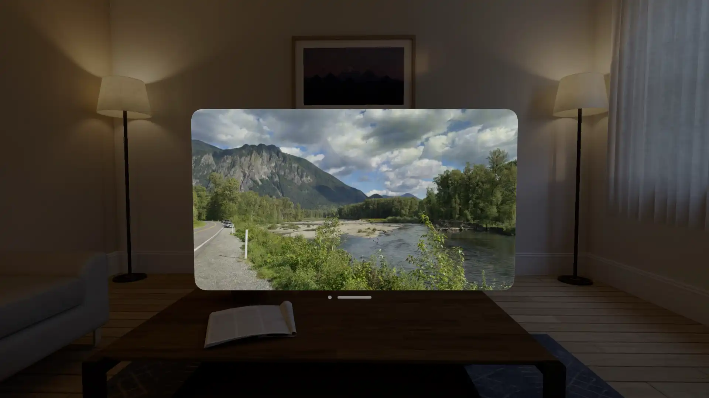
Recall: Moving Gallery
An app that shows random Live Photos and videos from your library. Built to surface unexpected memories you forgot you had.
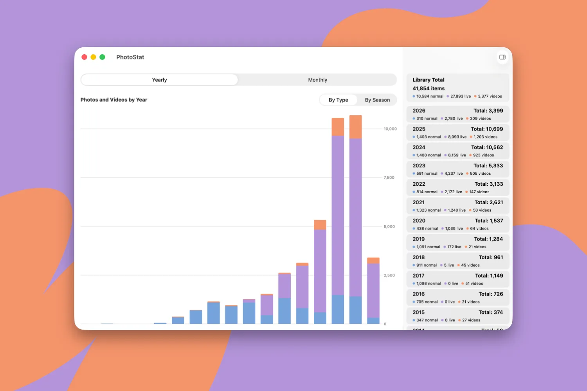
PhotoStat
A small project that can show stats of how many photos the user has taken by months or years, accessing iCloud Photos on macOS.
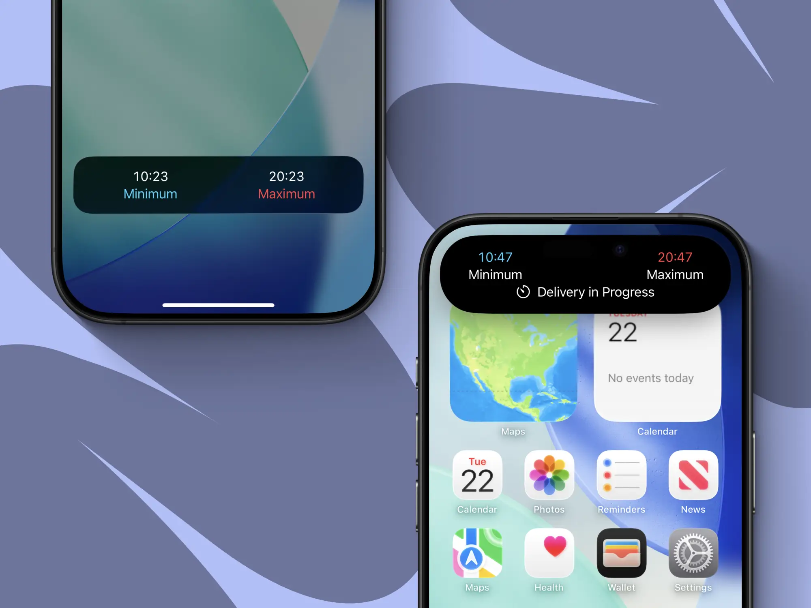
Live Activity for Dominos Pizza
An experiment in generating an iOS live activity for Dominos Pizza, which works on actual orders when a phone number is entered.
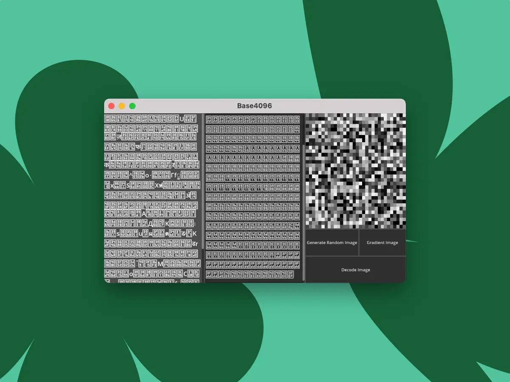
Base4096
An experiment in data compression for when character count matters more than total bytes. Useful for sending small pieces of data on character-capped platforms such as Twitter/X and Discord.